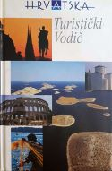

")
")

Hrvatska - turistički vodič prvi je vodič koji obuhvaća cjelokupni prostor Republike Hrvatske. To je vodič po hrvatskim turističkim regijama - njihovim prirodnim i kulturnim zanimljivostima i znamenitostima - koji će pomoći radoznalcima koji rado idu na izlete ili putuju u nove krajeve kako bi se lakše odlučili za cilj.
Cijela Hrvatska prikazana je u četiri geografsko-povijesne regije; pojedina mjesta u regijama dana su abecednim slijedom, a svaki grad, mjesto, turističko odredište obrađeno je geografski, kulturno-spomenično (važnija mjesta i povijesno) te turistički. Kako bi korisnik lakše shvatio važnost pojedinog lokaliteta, vodič je bogato ilustriran panoramskim slikama i slikama pojedinih objekata, hotela, dijelova grada te, za posebno važne spomenike, tlocrtima. Za sve veće gradove dani su i planovi.
Sva turistička odredišta vodič drži ciljem, uz koji preporučuje mnoštvo zanimljivih izleta, ponajprije automobilom, ali se na odredišta može stići i drugim prijevoznim sredstvima.
Vodič je podijeljen na informativni dio (početak i kraj knjige) i vodič u užem smislu, te sadrži nekoliko važnih priloga (Zaštićena prirodna baština, Kakvoća mora i zaštita okoliša u jadranskom prostoru i dr.).
Sadržaj upućuje na bitne elemente vodiča, posebice na njegov informativni dio, gdje su dane sve glavne obavijesti vezane uz putovanja i boravak u Hrvatskoj.
Sve o Hrvatskoj je pregledan informativni tekst koji daje sve bitne podatke o Republici Hrvatskoj: praktične savjete, geografsku i političku sliku države, opis njezinih geografsko-kulturnih povijesnih regija, kulturni i politički ljetopis hrvatskoga naroda te prikaz umjetnosti na tlu Hrvatske.
Slijede pojedinačni prikazi četiriju hrvatskih turističkih regija. Svaka od njih ima svoju naslovnicu (slikovnu), potom je regija smještena prostorno unutar Hrvatske »slijepom« kartom. Slijedi kratak opis i popis najkarakterističnijih geografskih, povijesnih i turističkih posebnosti te podsjetnik na koji se način može stići u regiju.
Dodatak vodiču su četri tematska teksta od kojih su prva dva posebno važna za poznavanje prirodnih resursa kao podloge ekološkog turizma (Zaštićena prirodna baština, Kakvoća mora i zaštita okoliša u jadranskom prostoru), dok su druga dva namijenjena ljubiteljima »romantične prošlosti« i sladokuscima,»fajnšmekerima« (Turizam i folklor i Hrvatska gastronomija).
Posebno važne turističke obavijesti dane su u deset tabličnih prikaza koji donose popise, adrese i brojeve telefona i telefaksa: turističkih zajednica, hotela, marina, nacionalnih parkova, diplomatsko-konzularnih predstavništava i dr.
Abecedno kazalo na kraju knjige daje vodiču dodatnu obavijesnu dimenziju .
Vodič je pisan leksikonskim načinom. Imena naselja preuzeta su iz Narodnih novina br. 10 od 3. I. 1997. Uglavnom se susreću dva tipa članaka. Osnovni članak, za veće ili važnije naselje, lokalitet ili prirodni fenomen, obuhvaća elemente geografije, baštine (kulturne ili prirodne) i turizma, a ispisan je verzalom. Članak-uputnica (»satelit«), najčešće se odnosi na lokalitete u bližoj okolici s važnom kulturnospomeničnom baštinom koja se preporučuje pogledati, a ispisan je polumasno.
Dok za jadransko područje pretežu osnovni članci, jer se gotovo uvijek radi i o turističkim odredištima, u kontinetskim regijama daju se glavna središta koja se obično posjećuju radi tranzitnoga, poslovnoga ili lovnoga turizma, a uz njih se nižu brojni »sateliti« s važnim spomenicima; rjeđe se susreću prirodni fenomeni (spilje, izvori, jezera). Zbog prometnih smjerova »sateliti« se ponekad upućuju na prometno uvjetovano mjesto, a ne na formalno administrativno središte.
Oblik osnovnog članka imaju i planine važne u planinarskom izletničkom turizmu, rijeke uz koje su vezani turistički sadržaji, jezera, nacionalni parkovi, parkovi prirode, strogi prirodni rezervati te neke povijesno-geografske regije (Banovina, Kordun). U vodiču je posebna pozornost dana zaštićenoj prirodnoj baštini koja je obrađena i pojedinačno unutar lokaliteta ali i u zasebnom članku (Zaštićena prirodna baština u Hrvatskoj).
Unutar pojedinoga osnovnog članka primjenjuju se grafički simboli: za povijesni pregled, kod povijesno važnih mjesta; za kulturnospomeničnu baštinu; za turističke obavijesti, te za izlete Uz svaki je osnovni članak dan broj pošte te adresa turističke zajednice. Ako mjesto nema turističku zajednicu, upućuje se na onu turističku zajednicu kojoj pripada ili pak na županijsku turističku zajednicu (to se odnosi posebno na područja koja su bila zahvaćena ratom, pa iz razumljivih razloga turističke zajednice nisu osnovane). Telefonski broj kao i broj telefaksa turističkih zajednica zbog česte izmjene brojeva telefonskih centrala u Hrvatskoj nismo donijeli uz članak, nego u zasebnom tabličnom dodatku (popis turističkih zajednica, str. 556).
Turistička mjesta kategoriziralo je Ministarstvo turizma kao A, B, C i D (iako kategorizaciju držimo privremenom i eksperimentalnom, donosimo je radi značenja državne skrbi za gospodarstveno i društveno važnu granu - turizam).
Glavni turistički sadržaj i ponuda dani su taksativno: smještajni kapaciteti, sportsko-rekreacijska ponuda, gastronomija, stalne kulturne i zabavne manifestacije organizacijskoga karaktera, organizirani izleti.
Neizostavan dio turističke ponude su izleti koje vodič preporučuje, a odnose se ponajprije na kulturne cjeline i spomenike te na prirodne fenomene; udaljenost do takvih mjesta izražena je kilometrima ili, na moru, morskim (nautičkim) miljama.
Kurzivom se unutar dijela teksta kulturnospomenične baštine obično upućuje na najvažnije spomenike u gradu; kurziviraju se i latinski nazivi radi boljega tekstualnog razumijevanja. Poštujući obrazovne razine korisnika, imena umjetnika (kipara, slikara, pozlatara) najčešće su pisana inicijalom. Isticanje župna crkva, katedrala i sl. znači da je crkva otvorena i da za razgledavanje ne trebaju posebne dozvole, ali i da se u njima održava bogoslužje.
Podaci za vodič, osim iz srodnih izdanja Leksikografskoga zavoda »Miroslav Krleža«, uzeti su iz sljedećih izvora: Popis stanovništva, domaćinstava, stanova i poljoprivrednih gospodarstava od 31. III. 1991. Državni zavod za statistiku, Zagreb. - Statistički ljetopis Republike Hrvatske, 1992., 1993., 1994., 1996. Državni zavod za statistiku, Zagreb.
Za klasifikaciju cestovnih prometnica (magistralne i regionalne) koristili smo se službenim podacima objavljenim u Narodnim novinama br. 50 od 27. IX. 1991. Međutim, tijekom redakcije došlo je do promjena klasifikacija cestovnih prometnica, te se one sada prema Odluci o razvrstavanju javnih cesta dijele na državne, županijske i lokalne ceste (Narodne novine br. 25 od 24. II. 1998.), stoje primijenjeno na turističkoj karti.
Posebni problemi pri izradi vodiča vezani su uz teške okolnosti Domovinskoga rata 1991.-95., kada je velik dio hrvatskoga prostora (oko 25%) bio privremeno okupiran. Uz nenadoknadive ljudske gubitke i žrtve hrvatskoga naroda, čest cilj srpskoga agresora bile su cijele regije: Baranja, istočna i zapadna Slavonija, Lika i Dalmacija, zatim i mnogi gradovi: Osijek, Vukovar, Dubrovnik, Zadar te posebice kulturno-povijesni spomenici: spomenične cjeline, crkve, samostani, kapele, groblja, a potom i škole, bolnice, knjižnice. Tako smo u vodiču naveli i spomenike visoke umjetničke kategorije ili osobita vjerskoga značenja kojih više nema ili su potpuno devastirani - crkve u Voćinu, Vukovaru, Aljmašu. Na mnogim mjestima navodi se stupanj oštećenosti, što znači da se svi ti spomenici obnavljaju ili će se obnoviti.
Velike ratne štete počinjene su i na mnogim turističkim kapacitetima (hoteli, kampovi, marine), međutim, nakon oslobođenja tih područja 1995. hrvatska Vlada donijela je hitne mjere obnove pa već danas gotovo svi važniji turistički kapaciteti u Hrvatskoj spremno dočekuju svoje goste.
Do novih podataka i stanja na terenu dolazili smo najčešće izravnim obraćanjem pojedinim turističkim zajednicama, kako županijskim tako i ostalima. Znatno su nam pomogle pa im najljepše zahvaljujemo.
Preporučuju se sljedeće karte i vodiči (izbor):
- Autoatlas Hrvatske, BiH i Slovenije (Leksikografski zavod »Miroslav Krleža«)
- Nautički vodič Jadrana (Leksikografski zavod »Miroslav Krleža«)
- Hrvatske planine, planinarsko-turistički vodič (dr. Z. Poljak, Zagreb 1996.)
Hrvatska - turistički vodič je prvi cjeloviti priručnik te vrste u Hrvatskoj. Trudili smo se da bude što svestraniji te da u njemu bude što manje manjkavosti ili netočnosti. Zasigurno su se, bilo pri navođenju podataka bilo u opisima, ipak potkrale neke od njih, pa molimo sve dobronamjerne korisnike da nam se jave kako bismo ih u sljedećem izdanju ispravili.
UPORABA VODIČA
Urednik
Godina izdanja: 2000.